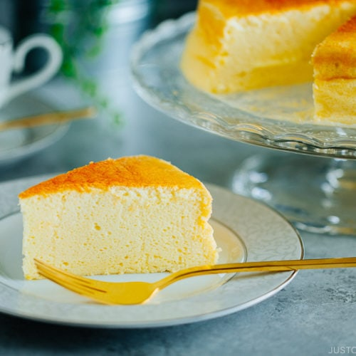

Japanese Cheesecake

Light, jiggly, and fluffy, Japanese Cheesecake (Souffle Cheesecake) is seriously the most delicious treat to serve for a crow. It will melt in your mouth. A second (or more) serving is guaranteed
Ingredients
- 60g whole milk
- 140g cream cheese
- 40g butter (room temperature)
- 40g all-purpose flour
- 15g corn starch (2 Tbsp)
- 5 eggs (white and yolk separated)
- 75g sugar
Steps
- Fill cooking tray with room temperature water until 1cm high. Preheat tray in overn to 250ºF.
- Mix whole milk, cream cheese, butter in pot over low heat. Mix with whisk until fully melted. Do not let it boil. Take it off heat
- Whisk in all-purpose flour and corn starch. Keep stiiring until mixture is thick and fully combined.
- Add 5 egg yolk into mixture.
- In a separate bowl, whisk with an electric beater 5 egg whites until soft-medium peaks. Add 75g fine sugar while white and runny.
- Fold in egg white to egg yolk mixture.
- Pour into greased pan. Use toothpick to make switls. Tap on counter to remove bubbles.
- Bake at 250ºF for 20 minutes. Then, 320ºF for 20 minutes and 220ºF for 30 minutes.
Back to Homepage